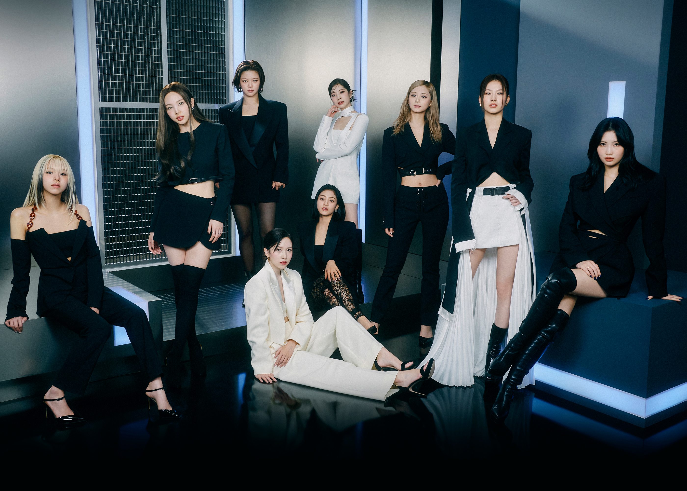
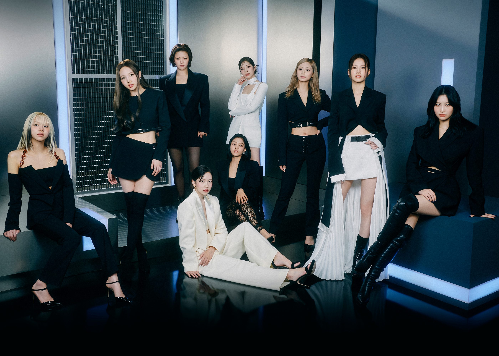

MEMBERS
- Nayeon: vocalist, dancer
- Jeongyeon: vocalist
- Momo: dancer, vocalist, rapper
- Sana: vocalist
- Jihyo: leader, vocalist
- Mina: dancer, vocalist
- Dahyun: rapper, vocalist
- Chaeyoung: rapper, vocalist
- Tzuyu: dancer, vocalist
Yes(12/12/2018)
Twice's story began with the reality television show Sixteen in 2015, which aimed to select the members of JYPE's new girl group. Out of the sixteen contestants, Nayeon, Jeongyeon, Momo, Sana, Jihyo, Mina, Dahyun, Chaeyoung, and Tzuyu emerged as the final lineup. On the 20th October 2015, their debut mini-album, The Story Begins, featured the hit single Like OOH-AHH, which instantly captivated the public with its catchy tune and charismatic music video.
WE WILL TOUCH YOUR HEART TWICE — ONCE WITH YOUR EYES AND ONCE WITH YOUR EARS
The year 2016 marked a turning point for Twice, as they released Cheer Up, a song that catapulted them to superstardom. Cheer Up not only dominated South Korean charts but also received critical acclaim, earning them their first-ever music show wins. The iconic shy shy shy dance move became a viral sensation, further cementing their status as a trendsetter in K-pop.
Twice continued to release hit after hit, including TT, Knock Knock, Likey, Heart Shaker, and What is Love. These songs showcased their versatility and ability to adapt to different musical styles, solidifying their place as one of the top girl groups in South Korea.
Twice's popularity transcended borders as they made their debut in Japan in 2017. Their Japanese releases, such as One More Time, Candy Pop, and Wake Me Up, quickly gained popularity, and Twice became the first Korean girl group to earn Platinum certification from the Recording Industry Association of Japan for a single.
Twice's international fan base grew exponentially with each release, and their infectious music, catchy choreography, and charismatic personalities drew fans from all corners of the world. The group embarked on world tours, performing in cities across Asia, North America, and Europe, further solidifying their global presence.
Twice's albums consistently achieved impressive sales figures in South Korea and internationally. They received numerous awards, including multiple Golden Disc Awards, Seoul Music Awards, and Mnet Asian Music Awards. Their albums like Twicetagram, Fancy You, and More & More showcased their growth as artists and their ability to experiment with different musical genres.
Twice members have also ventured into solo activities, such as acting, hosting, and releasing solo music, showcasing their versatility as performers. Despite facing challenges and controversies, the group has shown remarkable resilience and unity, garnering respect from fans and the industry alike.
Source: Wikipedia
 
